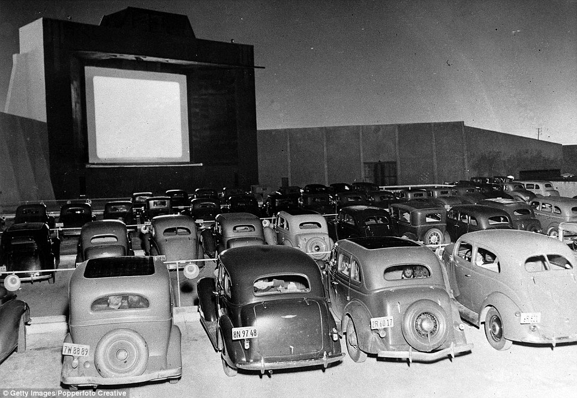
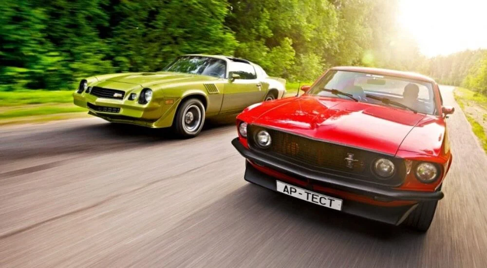
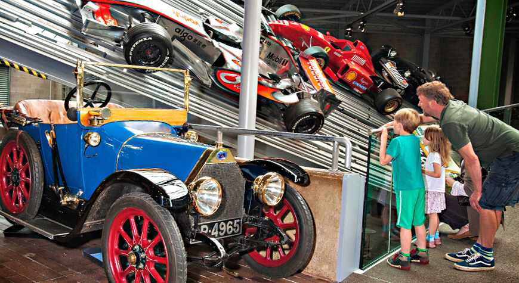
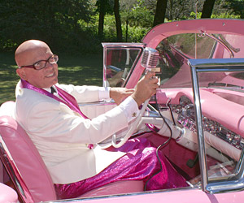
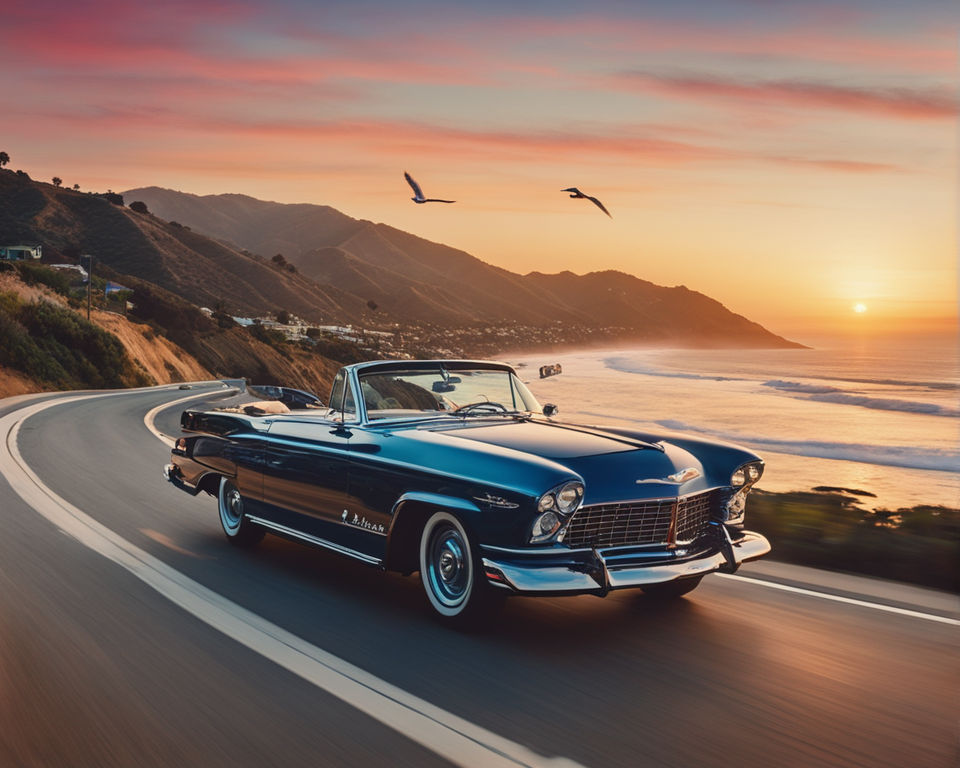

Classic cars have a charm that modern cars can't replicate. They represent an era of automotive history filled with innovation and style.
The Roaring Twenties! A time when cars weren't just vehicles; they were a statement.
Fast forward to the 50s, when style met speed. Cars became symbols of freedom and adventure.
The 60s brought power and performance. Muscle cars ruled the roads and hearts alike.
Today, these classic cars are not just vehicles. They're time capsules, taking us back to golden eras.
For many, classic cars are a bridge between generations, sharing stories of days gone by.
Classic cars: A timeless journey through history, style, and passion.
From the 1950s Chevrolet to the 1960s Ford Mustang, there are numerous classic models that car enthusiasts adore.
The history of classic cars is rich and varied, with each decade bringing its own set of innovations and design philosophies.
If you have any questions or would like to share your own classic car stories, please get in touch!